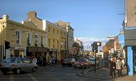
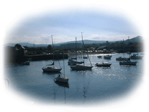

|
Fáilte
roimh go mBre-
Welcome to Bray.ie
AN
INTRODUCTION TO BRAY
by Adrienne
Palmer
Bray,
known as the Gateway to the Garden of Ireland, is now the eighth largest
town in Ireland with a population well in excess of 27,000 and is positioned
in north east Wicklow, just south of Dublin.
Tourism has always been associated with Bray, which is the longest established
seaside town in the country. The outbreak of World War 2 put the industry
'on hold' for its duration. However, during the 1950s tourists from
England, Scotland and Northern Ireland returned to Bray in great numbers
to escape the austerity of rationing.
Today, Bray is a vibrant holiday resort and boasts fine hotels and guest
house accommodation, shops, restaurants and evening entertainment. Available
in the immediate locality are fourteen 18-hole golf courses, tennis,
fishing, sailing and horse-riding.
Other features of Bray are the amusement and games centre. There is
also a Leisure centre on Quinsboro road, and a National Sealife Centre
on Strand Road.
Published
by: Local Ireland
Year written: 1999
Copyright owned by: Bray Tourism Ltd.
Bray.ie
officially open now!
Check
out the new look for Bray.ie, and we would like to hear from you.
Make your opinion count and send us your feedback either to info@bray.ie
or leave a message on our feedback
forum.
Even though some of the pages are still under construction, we strive
to bring you the best service directly to your home.
Wind
Farm planned for Offshore Wicklow
The Garden
County looks set to become an example to the world in the production
of sustainable energy with the announcement of plans to build the
world's biggest wind farm on the Arklow banks along the county Wicklow
coastline.
Bray
is Back as Wanderers Beat Kilkenny City
Bray
Wanders ended a six-game winless streak at the Carlisle grounds -
and prevented a drop to the regulation zone- with a 3-0 win over Kilkenny
City in the Eircom League Premier Division.
Please
let us know what you think about this site. It is still very much
under construction, and we would welcome any feedback you wish to
give, either by contacting us at info@bray.ie,
or by leaving a message on our Feedback
Forum on the Message
Board.

|